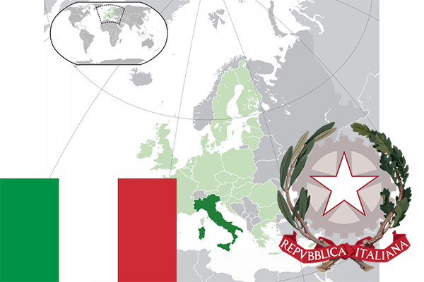

To`liq nomi: Italiya Respublikasi
Region: Janubiy Yevropa
Qonunchilik shakli: Respublika
Asos solingan: 17-mart 1861-yil
Poytaxt: Rim
Maydoni: 301 340 km² (dunyoda 71 -o`rinda )
Chegaradosh davlatlari: Fransiya, Shveysariya, Avstriya, Sloveniya, San-Marino, Vatikan
Aholisi: 60 795 612 (dunyoda 23 - o`rinda, 2014 -yil roʻyxat)
Aholi zichligi: 201,1 /km²
Aholining o`rtacha yoshi: 80,5 yil (83,1 ayollar, 77,0 erkaklar)
Rasmiy tili: Italyan tili
Dini: katolik
Pul birligi: yevro
Telefon prefiksi: +39
Internet domen: .it
Xalqaro tashkilotlarga a`zoligi: BMT (1955 – yildan), Katta yettilik, Yevropa Ittifoqi (1957-yildan)
Dengiz va okeanlarga chiqishi: Adriatika, Ioni, O`rtayer, Tirren dengizlari
YIM: Butun: $ 2,157 trln, Jon boshiga $ 35 811 (2015 - yil roʻyxati)
Yirik shaharlari: Rim, Milan, Neopol, Turin, Palermo, Genuya, Bolonya, Florensiya, Bari, Kataniya.